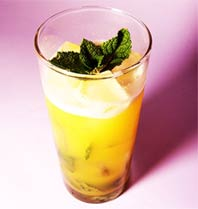
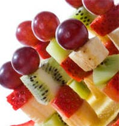
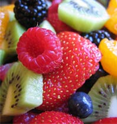
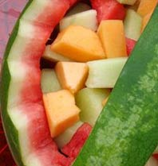
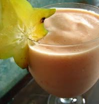

Fresh ideas for your table
This is a fresh idea for your table - anytime. Located within this site are fresh and elegant ways to prepare fruit - everything from healthy to sinful; tasty smoothies and fruit beverages that are easy to prepare in a great refreshing drink anytime to decedent fruit cocktails that will add fun and interest to any summer soirée
Summer is a great time to enjoy the fruits and vegetables of nature. They are plentiful and embrace the warmth and freedom of summer. Wholesome fruits are a wonderful addition to any party. Kids especially love to see an entire buffet table full of wholesome fresh fruits and nuts.

Passion Fruit Mojito
You must be 21 to try this one: Passion Fruit dries this special Mojito out while adding loads of extra fruit flavour. The Mint and Passion Fruit work together particularly well but tend to mask the rum somewhat.
Mix
1.5 shots of Light Rum
0.5 shots of Dark Rum
0.5 shots of Lime Juice
0.25 shots of Sugar Syrup
1 Passion Fruit
12 Mint Leaves
Shake
Halve and scoop out the Passion Fruit, gently muddle with the mint and Rum in the glass, add the Lime, Sugar and lots of crushed ice, top up with Soda, churn well and serve.
Pour
Serve in a Collins glass and garnish with a mint sprig.
Fun Fruit Kabobs
Fun to eat and healthy fruit kabobs that are a party favorite!
You'll Need:
Melon balls or cubes
Bananas
Strawberries or Blueberries
Pineapple
Kiwi
Grapes
Kid-safe skewers such as wooden craft sticks or coffee stirrers
Apples, pears and oranges will work depending on the width of the skewer
Directions:
Cut fruit in large chunks.
If you are using apples, pears or bananas, rinse them in lemon juice to prevent browning.
Gently insert the skewer into the fruit alternating between the various fruit to add variety.
Place the fruit kabobs on a party platter. Cover and chill until serving.
Watermelon Salad

You'll Need:
2 small watermelons
1 (15 ounce) can canned diced pineapple in juice, drain juice and reserve
1 pound seedless grapes
2 apples - peeled, cored and chopped
2 bananas, cut into bite-size pieces
Directions
Cut each watermelon in half lengthwise. Hollow out the insides using a melon baller, reserving rind for later use. Drain pineapple, and discard juice. Cut apples in half, remove cores, and cut into bite size pieces. Peel banana, and slice in to bite size pieces. Rinse grapes under cold running water, and pat dry.
In a bowl, toss together the watermelon balls, pineapple, apple, banana chunks, and grapes. Divide fruit salad among the 4 reserved watermelon "bowls," and serve.
Refresco de Papaya
This cold papaya smoothie from the Dominican Republic will keep you cool on a hot day. It's so good, you can even serve it as dessert. You will need an electric blender or food processor to make this drink.

You'll Need:
1 ripe papaya
1/2 cup milk
3 tablespoons lime juice
1/2 teaspoon lime rind (freshly grated)
1/4 cup sugar, 1/2 teaspoon vanilla extract
1/2 cup crushed ice
lime wedges for garnish (optional)
Directions
Peel the papaya. Cut it in half lengthwise, remove the seeds, then coarsely chop the papaya flesh. Place the papaya chunks and the rest of the ingredients, except the garnish, into an electric blender or food processor. Mix on high speed for 20 to 30 seconds, until the mixture is smooth and thick. Pour the smoothie into a tall frosted glass, garnish with a lime wedge, and serve at once.